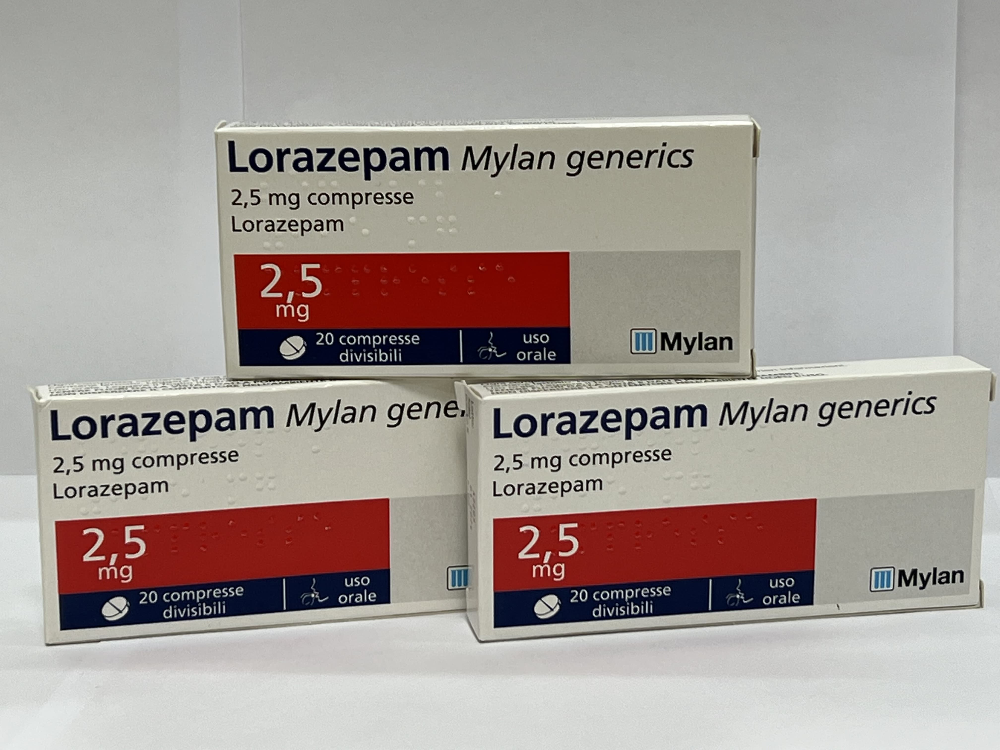

Контактна інформація:
Ціна: 500 грн/уп.
В наявності
Виробник: Італія
Ціна: 500 грн/уп.
В наявності
Саме в FarmItal ви можете купити таблетки Lorazepam, Лоразепам 2,5мг в Україні, Гарантовано Якісний!
Доставка Lorazepam здійснюється транспортними компаніями, терміни виконання замовлення обумовлюються менеджером Фармітал. Ви можете замовити Лоразепам у містах: Одеса, Херсон, Чернігів, Сєверодонецьк, Бердянськ, Бровари, Дніпро, Вінниця, Київ, Слов'янськ, Полтава, Краматорськ, Біла Церква, Кам'янське, Маріуполь, Чернівці, Олександрія, Кам'янець-Подільський, Львів, Запоріжжя, Кропивницький, Житомир, Івано-Франківськ, Суми, Черкаси, Костянтинівка, Мелітополь, Кривий Ріг, Рівне, Луцьк, Нікополь, Павлоград, Ужгород, Кременчук, Лисичанськ, Хмельницький, Тернопіль, Харків, Миколаїв, а також в інших населених пунктах України.
Лоразепам випускається у формі таблеток.
Таблетки Лоразепам виконані на основі Лоразепаму.
Допоміжними компонентами таблеток є лактоза, моногідрат; целюлоза мікрокристалічна; магнію стеарат; калію полакрилін.
Діюча речовина лоразепам належить до препаратів бензодіазепінового ряду. Це транквілізатор середньої тривалості дії, який має терапевтичну дію вже у низьких дозах. Анксіолітична дія та антиконвульсивний ефект лоразепаму у високих дозах мають виражений характер, а седативний та, особливо, міорелаксантний ефекти є відносно слабкими. Шляхом послаблення емоційних факторів лоразепам усуває умови для виникнення хвороб, спричинених емоціональними та психореактивними факторами. При одноразовому прийомі на ніч препарат має снодійний ефект.
Зберігати у недоступному для дітей місці.Зберігати у захищеному від вологи місці, при температурі не вище 25 °C.